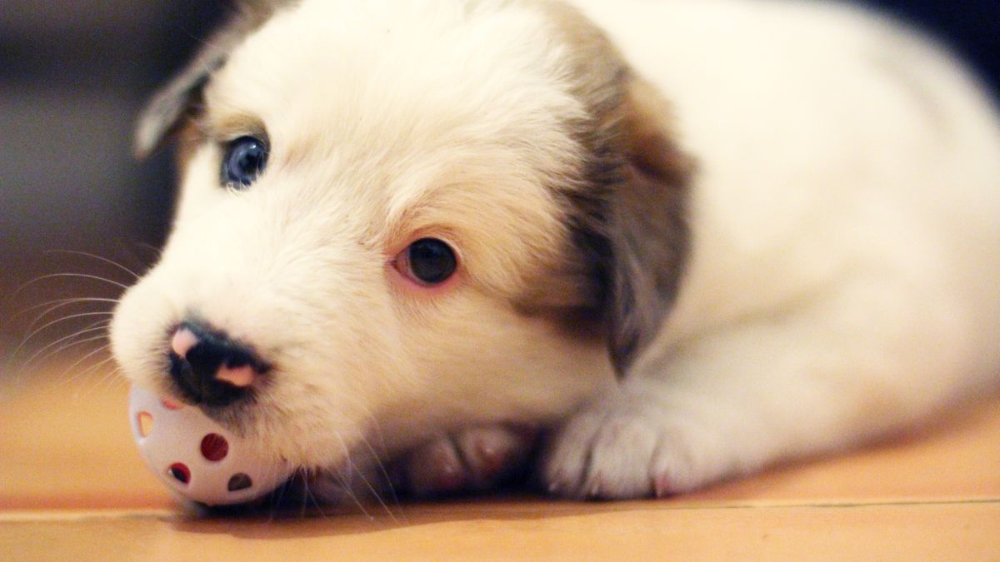
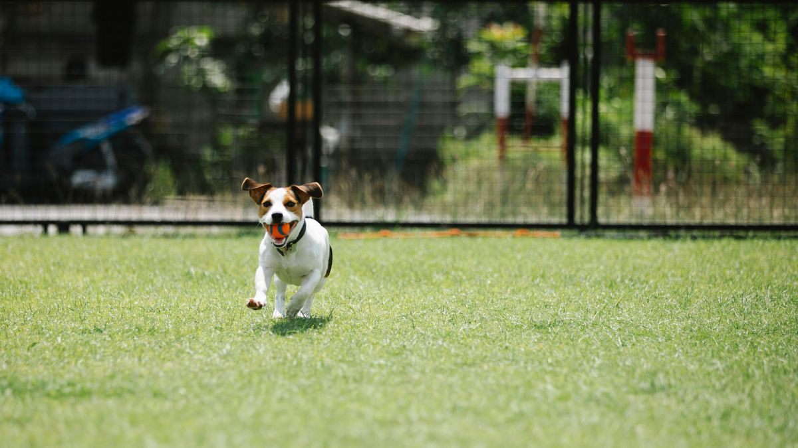

놀이 유형
- 냄새 탐색: 수건·매트에 간식 3~5개 숨기기(5분)
- 짧은 fetch: 복도 10m 왕복 5회
- 퍼즐 피더: 1회 10분, 간식 5g 이내
- 터치·이름 부르기: 3분, 보상 5개 이하

비 오는 날은 '탐색 5분+걷기 5분'만으로도 충분한 출발점입니다. 여러 놀이를 한 세션에 넣기보다 하나만 깊게 하는 편이 과흥분을 줄입니다.
균형 잡기
흥분 지속 15분 넘으면 과피로 위험이 있습니다. 세션 끝에 물·20분 휴식·조명 낮추기를 넣습니다. 하루 총 실내 놀이 30분을 넘기지 않는 것이 초기 기준입니다.
세션 끝 신호: 물 한 그릇, 조명 낮추기, 같은 자리에 20분 휴식. 흥분이 15분 넘으면 다음 세션은 5분만 하거나 하루 쉬세요.
안전
미끄러운 마루에서는 달리기 대신 걷기·탐색만. 삼킬 수 있는 공(지름 3cm 이하) 금지. 소파 위 점프 놀이는 슬립 부상이 있어 1층만 허용하는 집이 많습니다.

고양이 실내 자극
낚싯대 5분×하루 2회, 창밖 버드뷰 10분, 캣타워 없으면 선반 40cm 높이 확보. 같은 장난감 3일마다 교체하면 지루함이 줄어듭니다.
실전 적용 노트
실내 놀이는 '비싼 장난감'보다 '하루 10분×2회·같은 시간'이 효과를 만듭니다. 출근 전·저녁 식사 전 5분만 해도 충분한 출발점입니다.
냄새·소리·이동이 다른 놀이를 번갈아 하면 지루함이 줄어듭니다. 같은 공 던지기만 2주 하면 흥미가 떨어지는 경우가 많습니다.
고양이는 수평·수직 공간을 함께 씁니다. 캣타워가 없어도 의자 등받이·박스로 2층 구조를 만들 수 있습니다.
훈련형 놀이(앉아·기다려)는 3분 안에 끝내고, 성공하면 바로 휴식을 주세요.
소음 민감 가정은 바닥에 담요를 깔아 공 굴러가는 소리를 줄이세요.
과격한 점프·급정지는 미끄러운 마루에서 다치기 쉬워, 미끄럼 방지 매트가 도움이 됩니다.
놀이 후 물·짧은 그루밍으로 '끝' 신호를 주면 밤 활동이 줄어드는 집이 있습니다.
아이와 함께 놀 때는 아이 손과 장난감이 섞이지 않게 역할을 나누세요.
이번 주 목표는 '새 장난감 1개'가 아니라 '기존 장난감으로 5분 놀이 3회'입니다.
이번 주 실내 놀이 체크리스트입니다. 10분×2회면 충분한 출발점입니다.
- 출근 전·저녁 식사 전 5분 놀이를 2회 이상 시도했습니다.
- 냄새·소리·이동이 다른 놀이를 번갈아 했습니다.
- 훈련형 놀이는 3분 안에 끝내고 휴식을 줬습니다.
- 미끄러운 마루에 매트를 깔았습니다.
- 고양이는 수평·수직 공간을 함께 썼습니다.
- 놀이 후 물·짧은 그루밍으로 마무리했습니다.
- 아이와 놀이 시 역할을 나눴습니다.
- 새 장난감 구매 대신 기존 장난감으로 5분 놀이를 했습니다.
놀이의 목표는 지치게 하는 것이 아니라, 하루 리듬에 예측 가능한 에너지 배출을 넣는 것입니다.
실내 놀이는 장난감 구매보다 하루 10분×2회·같은 시간이 효과를 만듭니다. 냄새·소리·이동을 번갈아 쓰고, 3분 훈련 후 휴식을 주세요. 미끄러운 마루에는 매트, 고양이는 수직·수평 공간을 함께 활용합니다. 놀이 후 물·짧은 그루밍으로 끝 신호를 주면 밤 활동이 줄어드는 집이 있고, 이번 주 목표는 '기존 장난감 5분×3회'면 충분합니다.
놀이 후 2분 휴식을 고정하면, 흥분이 밤까지 이어지는 경우를 줄이는 데 도움이 됩니다.
마무리로, 이번 주에는 체크리스트 3개만 골라 2주 반복해 보세요. 작은 성공이 쌓이면 나머지는 자연스럽게 늘어납니다.
기록이 쌓이면 병원·상담 때 설명이 쉬워집니다. 한 줄 메모라도 같은 항목으로 이어 쓰는 것이 핵심입니다.
완벽한 루틴보다 80% 지켜지는 루틴이 오래 갑니다. 안 된 날은 원인 한 줄만 적고 다음 주에 조정하세요.
오늘 당장 하나만 고른다면, 체크리스트 맨 위 항목부터 시작해 보세요. 나머지는 다음 주로 미뤄도 괜찮습니다.
가족이 함께 돌본다면, 누가 했는지 체크박스 한 칸만 추가해도 누락·중복이 줄어듭니다.
검색으로 답을 찾기 전에 7일 메모를 먼저 정리해 보세요. 증상 설명이 훨씬 빨라지는 경우가 많습니다.
새 용품·새 사료·새 루틴은 동시에 바꾸지 않습니다. 한 가지만 바꾸고 5일 관찰하는 편이 안전합니다.
이번 달 목표는 '매일 완벽'이 아니라 '이번 주 3회 성공'입니다. 0회에서 1회로 바뀌는 것만으로도 충분한 진전입니다.
스트레스 신호(회피·짖음·숨 가쁨)가 보이면 시간을 반으로 줄이세요. 짧게 자주 성공하는 쪽이 학습에 유리합니다.
계절·이사·손님처럼 환경이 바뀌는 주에는 루틴을 단순화하세요. 필수 3개만 지키고 나머지는 다음 주로 미뤄도 됩니다.
사진 한 장이 긴 설명보다 나을 때가 있습니다. 같은 조명·각도로 남기면 변화 비교가 쉬워집니다.
병원 방문 전에는 '언제부터·얼마나 자주·무엇이 함께 변했는지' 3가지만 정리해도 상담이 수월해집니다.
루틴이 무너진 날을 실패로 보지 말고, 겹친 일정(야근·손님·이사)을 한 줄로 적어 두세요. 다음 주 조정 근거가 됩니다.
정리하며
비 오는 날 1시간 놀이 후 밤에 하울링하는 패턴을 봤습니다.
저는 실내 놀이를 '에너지 방출'이 아니라 '끝맺음 있는 15분'으로 정의합니다. 끝이 없으면 밤이 힘듭니다.
비 오는 날은 15분 세션 1회만으로 시작해 보세요. 끝에 20분 휴식을 꼭 넣으세요.
초보자가 자주 실수하는 포인트
- 1시간 고강도만 반복
- 미끄러운 마루에서 달리기
- 3cm 이하 공·장난감 방치
- 놀이 후 휴식 없이 바로 취침
- 고양이에게 낚싯대 30분 연속
체크리스트
- 10~15분 세션 타이머
- 탐색·활동·휴식 3단 구성
- 바닥 미끄럼 매트 확인
- 장난감 크기 3cm 이상
- 놀이 후 물·20분 휴식
자주 묻는 질문
- 실내 놀이는 하루에 몇 분이 적당한가요?
- 10~15분 세션×하루 2회, 총 30분 이내가 초기 기준입니다. 개체 반응에 맞게 조절하세요.
- 비 오는 날 산책을 대체할 수 있나요?
- 완전 대체는 어렵지만, 냄새 탐색·짧은 활동으로 일부 에너지를 소모할 수 있습니다. 끝에 휴식을 넣으세요.
이 글은 초보자 기준으로 이해하기 쉽게 정리되었으며, 내용은 운영 과정에서 순차적으로 보완될 수 있습니다. 수의사 등 전문가의 진단·처치를 대체하지 않습니다.